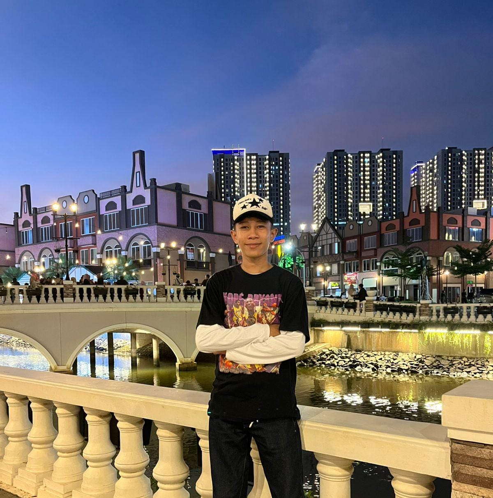

biodata
Umur: 17 tahun
Hobi: futsal , main hp
Alamat: griya bintang mekarsari
Nomor: 085619283347
Andika Nur Pratama lahir sebagai anak tunggal dalam keluarga sederhana. Ayahnya adalah seorang karyawan swasta, sementara ibunya,menjalankan usaha kecil menjual kue di rumah. Meski hidup dengan keterbatasan, keluarga ini selalu menjunjung tinggi nilai kejujuran, kerja keras, dan saling menyayangi—mirip dengan Keluarga Cemara yang sering mereka tonton bersama saat Andika kecil.
Sejak kecil, Andika terbiasa dengan pola hidup sederhana. Ia tidak selalu mendapatkan mainan mahal atau barang mewah seperti teman-temannya, tapi ia tumbuh dengan penuh cinta dan kebersamaan. “Yang paling penting bukan seberapa banyak yang kita punya, tapi seberapa besar kita mensyukurinya,” kata ibunya suatu hari. Kata-kata itu selalu terpatri dalam hatinya.
Di sekolah, Andika bukan anak yang paling pintar, tapi ia rajin dan memiliki rasa ingin tahu yang tinggi. Ia sering membantu ibunya membuat kue. Dari kedua orang tuanya, ia belajar arti kerja keras dan ketulusan dalam hidup.
Ketika beranjak remaja, Andika menghadapi tantangan besar. Saat ia duduk di bangku SMA,Keuangan keluarga pun goyah. Tanpa berpikir panjang, Andika membantu ibunya berjualan kue selesai pulang sekolah. Ia mengantar pesanan ke tetangga.
Meski lelah, ia tetap berusaha menjaga prestasi akademiknya. Tekadnya kuat: ia ingin kuliah dan memberikan kehidupan lebih baik bagi orang tuanya.
Selama sekolah, Andika tetap membawa nilai-nilai keluarganya. Ia tidak gengsi bekerja paruh waktu untuk mencukupi kebutuhan. Setelah lulus, ia mendapat pekerjaan yang baik dan akhirnya bisa membelikan rumah kecil untuk orang tuanya.
Namun, yang paling membahagiakan bagi Andika bukanlah materi yang ia capai, melainkan melihat senyum orang tuanya. Ia menyadari bahwa keberhasilannya bukan hanya karena kepintaran atau kerja kerasnya sendiri, tetapi juga karena nilai-nilai kehidupan yang ditanamkan oleh keluarganya sejak kecil: kejujuran, kerja keras, dan kasih sayang.
Suatu malam, saat mereka makan bersama seperti dulu, ayahnya berkata, “Kamu tahu, Dik? Keluarga kita mungkin nggak punya segalanya, tapi kita punya satu sama lain. Itu lebih dari cukup.”
Andika tersenyum. Ya, keluarganya memang bukan keluarga kaya, tapi mereka adalah keluarga yang kaya akan cinta—seperti Keluarga Cemara yang dulu sering ia tonton.